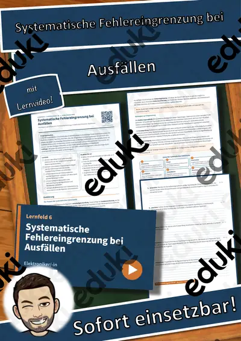
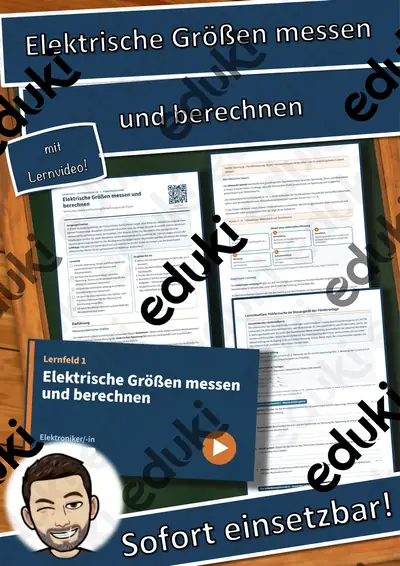
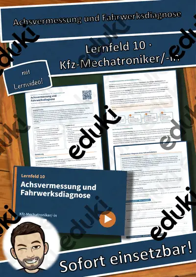
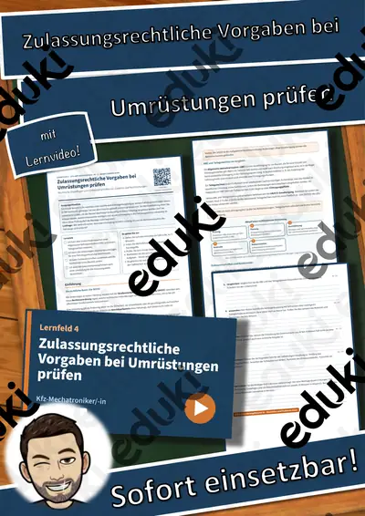
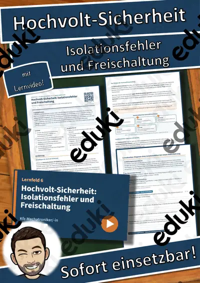
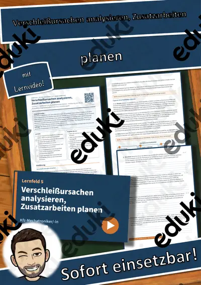

LF 6 Elektroniker/-in: Systematische Fehlereingrenzung bei Ausfällen – Übungen, Lösungen + Lernvideo

LF 1 Elektroniker/-in: Elektrische Größen messen und berechnen – Übungen, Lösungen + Lernvideo
LF 8 Fachinformatiker/-in: Schnittstellen und Datenformate für den Datenaustausch – Übungen, Lösungen + Lernvideo
LF 9 Kfz-Mechatroniker/-in: Klimaanlagenservice: Kältemittelrückgewinnung und Dichtigkeitsprüfung – Übungen, Lösungen +
LF 4 Kfz-Mechatroniker/-in: Zubehör und Nachrüstungen fachgerecht anschließen – Übungen, Lösungen + Lernvideo

LF 10 Kfz-Mechatroniker/-in: Achsvermessung und Fahrwerksdiagnose – Übungen, Lösungen + Lernvideo

LF 4 Kfz-Mechatroniker/-in: Zulassungsrechtliche Vorgaben bei Umrüstungen prüfen – Übungen, Lösungen + Lernvideo

LF 6 Kfz-Mechatroniker/-in: Hochvolt-Sicherheit: Isolationsfehler und Freischaltung – Übungen, Lösungen + Lernvideo

LF 5 Kfz-Mechatroniker/-in: Verschleißursachen analysieren, Zusatzarbeiten planen – Übungen, Lösungen + Lernvideo
LF 3 Kfz-Mechatroniker/-in: Grundgrößen und ohmsches Gesetz im Kfz-Bordnetz – Übungen, Lösungen + Lernvideo

Technisches Zeichnen: Flache Werkstücke - Einführung + Einfache Veränderungen inkl. Lösungen (Flache Werkstücke)
Keine Materialien gefunden – versuch einen anderen Suchbegriff oder Filter.